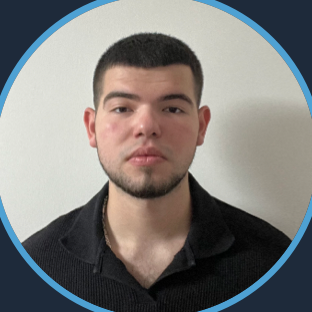

About
IT technician with hands-on L1–L2 support experience for large international companies MetLife and Strabag. I manage users in Active Directory and Microsoft Entra ID, deploy devices with Intune and SCCM, handle tickets in ServiceNow and OMNITRACKER, and work with network infrastructure. Certified Lenovo service technician. I study Software Development at Unicorn University alongside work.
Experience
Hemmersbach Czech
IT Technician – Lenovo & Generali projects
September 2026 – present
- Service and repair of Lenovo laptops and PCs – hardware diagnostics, component replacement, OS recovery
- Installation, preparation and configuration of IT equipment for Generali users
L2 IT Support – Strabag
July 2026 – August 2026
- Resolving L2 requests and incidents in OMNITRACKER
- Managing user accounts in Active Directory, Microsoft 365 and Entra ID
- Cabling Lenovo servers and network devices; documenting rack equipment (patch panels, switches, Extreme Networks access points)
- Troubleshooting PoE / access point connectivity using the command line and ExtremeCloud IQ
L1–L2 IT Support – MetLife
February 2026 – June 2026
- Resolving L1–L2 incidents and requests in ServiceNow (approx. 10 tickets per day)
- Managing users, groups and access in Active Directory and Microsoft Entra ID
- Preparing and configuring laptops; deployment with Microsoft Intune and SCCM
- Remote user support; software and hardware installation and configuration
Skills
IT & Microsoft
Hardware & Networks
Ticketing
Certification
Lenovo service certification (Lenovo Learning), incl. Warranty Service Authorization
Languages
Ukrainianfluent
Russianfluent
Czechadvanced
Englishintermediate
Education
Unicorn University
Software Development (BSc)
October 2025 – present
1. KŠPA Prague
Information Technology – secondary school diploma (maturita)
September 2021 – May 2025
Contact
Feel free to get in touch.